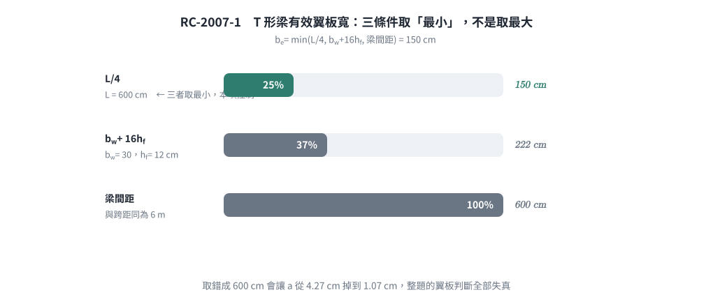
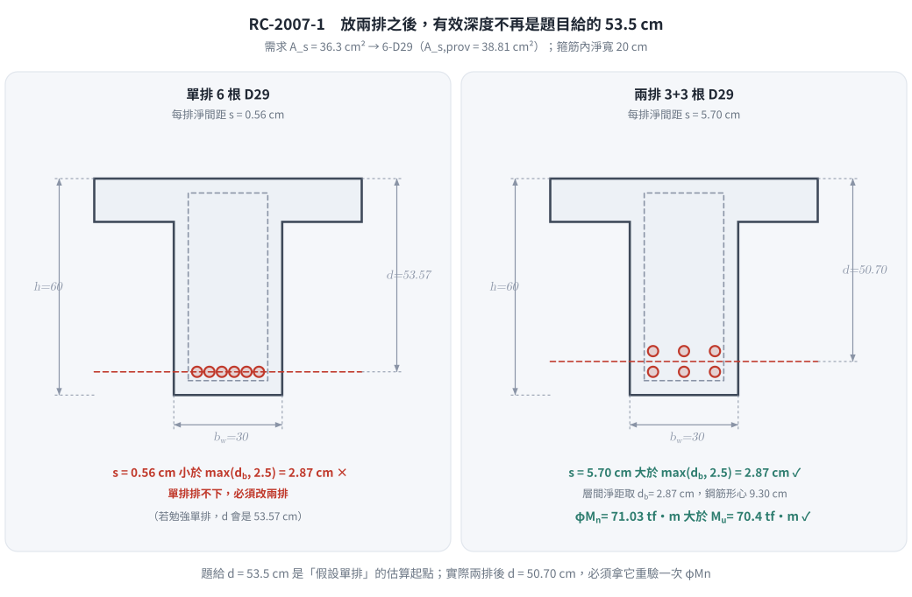
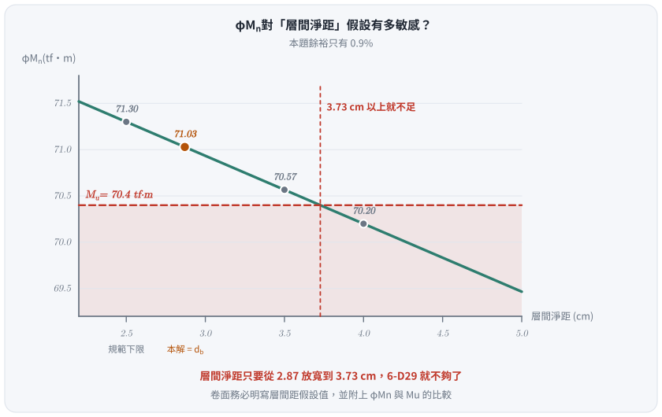

📄 題目正本：考卷原文・附圖・判讀清單（已確認）
RC-2007-1 題目正本
本檔只記錄考卷上寫了什麼、圖上畫了什麼，不含任何解法。解析見同資料夾
RC-2007-1.md。
判讀清單已經使用者確認（凍結）；本檔原則上不再修改（改動須回考卷原圖並記 log）。
| 項目 | 內容 |
|---|---|
| 考卷 | raw/exams/RC-2007_鋼筋混凝土設計與預力.pdf 第 1 頁（全一張之正面），第一題 |
| 考年 | 民國 96 年（2007） |
| 配分 | 25 分 |
| 附圖 | 無 |
| 判讀狀態 | 已確認（2026-11-12 使用者確認；轉錄 2026-11-12，PyMuPDF 110 dpi 全頁目視＋抽出文字核對；盲讀後才比對既有解析） |
1. 考卷原文（逐字）
一、一樓版系統，版厚 12 cm，梁腹寬 30 cm，梁全深 60 cm（含版厚），有效深度 53.5 cm，梁間距為跨距 6 m，$M_d$ = 12 tf-m，$M_l$ = 35 tf-m，$f'_c$ = 280 kgf/cm²，$f_y$ = 4,200 kgf/cm²，試以單筋梁設計，使用 D29（面積＝6.469 cm²），並依照鋼筋最大最小間距相關規定排列鋼筋。（25 分）
2. 考卷給的公式、附表與參數
卷首（適用全卷各題）照錄：
以下各題之計算所用之規定及常數如下（※如有條件不足時，請自行合理假設）
1. 靜載重因數 1.2，活載重因數 1.6
2. 強度折減係數：
(1) 拉力控制斷面：0.90，（$\varepsilon_t$ 大於 0.005）
(2) 壓力控制斷面：0.65（$f_y$ = 4,200 kgf/cm² 時 $\varepsilon_t$ 小於 0.002）
(3) 過渡斷面：介於(1)及(2)間者，$\phi$=0.483+83.3$\varepsilon_t$
$\varepsilon_t$ 為構件破壞時最外受拉鋼筋淨拉應變值
(4) 剪力：0.75
(5) 柱：0.65
3. $E_s$ = 2.04×10⁶ kgf/cm²
4. D29 之面積為 6.469 cm²
- 題文數值：版厚 $h_f=12$ cm；腹寬 $b_w=30$ cm；全深 $h=60$ cm（含版厚）；$d=53.5$ cm；「梁間距為跨距 6 m」；$M_d=12$ tf-m、$M_l=35$ tf-m；$f'_c=280$、$f_y=4200$ kgf/cm²；D29（6.469 cm²）。
- 沒有給：箍筋號數、保護層厚度、粒料最大粒徑（排筋間距檢核需要）、D29 直徑、$\beta_1$、斷面圖。卷首允許「條件不足時，請自行合理假設」。
- 卷首注意事項：㈠可以使用電子計算器；㈡不必抄題。
3. 附圖
本題無附圖。
4. 判讀清單
「把握」標不確定者請優先確認；解讀類項目（題目用字的意思）另標「解讀」。
| # | 項目 | 判讀 | 圖上／題文依據 | 把握 |
|---|---|---|---|---|
| 1 | 構件 | 樓版系統中的梁，版與梁一體 → T 形梁（正彎矩翼板受壓） | 題文「樓版系統」「全深 60 cm（含版厚）」 | 確定（解讀） |
| 2 | 「梁間距為跨距 6 m」 | 句子有缺字。讀法 A：梁間距＝跨距＝6 m（兩者都是 6 m）；讀法 B：只給梁間距 6 m、跨距未給。有效翼寬取 min(跨距/4, $b_w+16h_f$, 梁間距) 時，讀法 A 由跨距/4＝150 cm 控制，讀法 B 須另假設跨距。兩種讀法試算的配筋結果相同（見批次報告 題目正本-RC-U1-1-批1-2026-11-12.md） | 題文照錄 | 不確定（解讀）；使用者確認 |
| 3 | 彎矩 | $M_d=12$、$M_l=35$ tf-m 為工作（未乘因數）靜、活載彎矩；$M_u=1.2M_d+1.6M_l$ | 卷首第 1 點載重因數 | 確定（解讀） |
| 4 | 設計方式 | 單筋梁（不配壓力筋），鋼筋一律用 D29 | 題文 | 確定 |
| 5 | $\phi$ | 依卷首：$\varepsilon_t>0.005$ 用 0.90，過渡區 $\phi=0.483+83.3\varepsilon_t$ | 卷首第 2 點 | 確定 |
| 6 | 排筋 | 須依鋼筋最大／最小間距規定排列；所需箍筋、保護層、粒徑考卷未給，須自行合理假設 | 題文＋卷首「條件不足自行合理假設」 | 確定 |
| 7 | 考卷沒有給 | 箍筋、保護層、粒徑、D29 直徑、$\beta_1$ | 全題 | 確定 |
轉錄：2026-11-12（RC-U1-1 題目正本推廣・批 1）
確認：2026-11-12 使用者確認（RC-U1-1 題目正本推廣・批 1，關卡一）
考題編號：RC-2007-1
主分類： RC-U1-1 RC 梁彎矩強度分析與設計
副分類： 無
設計法： USD強度設計法
標籤： T形梁設計 有效翼板寬 中性軸在翼板 D29鋼筋 兩排配筋 最小最大間距 單筋梁
1. 題目（考卷原文見題目正本）
考卷原文、公式／附表與判讀清單（已確認）見
RC-2007-1-problem.md。本節只列解題時最容易讀錯的地方與本解使用的記號；題意以題目正本為準。
常見誤讀
| 項目 | 正確判讀 | 常見誤讀 |
|---|---|---|
| 構件 | 樓版系統中的梁 → T 形梁，正彎矩翼板受壓（判讀 #1） | 當成 30 × 60 矩形梁 |
| 「梁間距為跨距 6 m」 | 梁間距＝跨距＝6 m（判讀 #2，使用者確認；另一讀法「只給梁間距」配筋結果相同） | — |
| 彎矩 | $M_d$、$M_l$ 是工作彎矩，$M_u = 1.2M_d + 1.6M_l$（卷首第 1 點） | 直接當 $M_u$ |
| 有效深度 | 53.5 cm 是題目給的 | 當成假定值另算 |
| 考卷沒給 | 箍筋、保護層、粒徑、D29 直徑（判讀 #7）；卷首允許自行合理假設 | — |
| 排筋規定 | 題目要求「最大最小間距」：最小淨距與最大間距（裂縫控制）兩者都要檢核 | 只檢核最小淨距、漏掉最大間距 |
本解記號： $h_f=12$、$b_w=30$、$h=60$、$d=53.5$ cm；$L$＝跨距＝梁間距＝600 cm；$b$＝有效翼板寬；D29 單根 $A_b=6.469$ cm²。
2. 考題核心精神與出題者意圖 (Core Concepts & Examiner's Intent)
核心觀念：
- 判斷 T 形梁有效翼板寬 → 確認中性軸在翼板內（等效矩形梁計算）
- 由 $\phi M_n \geq M_u$ 反推 $A_s$ → 換算 D29 根數
- 鋼筋間距規定：最小淨間距 $\geq d_b$；若單排放不下則改兩排，並驗算實際 $d$ 仍足夠；最大間距依裂縫控制 $s \le 38(2800/f_s)-2.5C_c \le 30(2800/f_s)$
出題者陷阱：
- D29 根數需多行放置，放兩排後 $d_{actual} < 53.5$ cm，需重新驗算 $\phi M_n \geq M_u$
3. 解題戰略地圖與陷阱分析 (Strategic Roadmap & Trap Analysis)
| 步驟 | 工作 |
|---|---|
| 1 | 因數化彎矩 $M_u$ |
| 2 | 計算 T 形梁有效翼板寬 $b$ |
| 3 | 假設 $a \leq h_f$，以矩形梁公式求 $A_s$ |
| 4 | 驗證假設 + 驗算 $\phi = 0.9$（$\varepsilon_t > 0.005$） |
| 5 | 換算 D29 根數，檢核最小 + 最大間距 |
| 6 | 確認兩排放置後的 $d_{actual}$，重算 $\phi M_n \geq M_u$ |
三大陷阱：
| 陷阱 | 說明 |
|---|---|
| ⚠ 有效翼板寬選取 | 須取 $L/4$、$b_w+16h_f$、梁間距 三者之最小值 |
| ⚠ D29 放兩排 → $d$ 降低 | 兩排配置後實際 $d_{actual} < 53.5$ cm，需重新驗算 |
| ⚠ 最小間距 = $\max(d_b, 2.5 \text{ cm})$ | D29 的 $d_b = 2.87$ cm，故最小淨間距 = 2.87 cm |
3.5 變數層次分析 (Variable Hierarchy Analysis)
複習提示：第一次解題後，在每個卡住的知識點旁標記
⚠；第二次複習時只看有⚠的項目。
最終目標
設計 T 形梁張力鋼筋量，換算 D29 根數並依間距規定排列，驗算 φMn ≥ Mu
本題關鍵公式（依計算順序）
$$\text{Step 1: } M_u = 1.2M_D + 1.6M_L$$
$$\text{Step 2: } b = \min\!\left(\frac{L}{4},\ b_w+16h_f,\ \text{梁間距}\right)$$
$$\text{Step 3: } a = \frac{A_s f_y}{0.85 f'_c \boxed{b}}, \quad \phi M_n = \phi A_s f_y\!\left(d - \frac{\boxed{a}}{2}\right) \geq M_u$$
$$\text{Step 4: } \varepsilon_t = 0.003 \times \frac{d - \boxed{c}}{\boxed{c}}, \quad c = \frac{\boxed{a}}{\beta_1}$$
$$\text{Step 5 (間距): } s_{clear} = \frac{b_w - 2c_{side} - n \cdot d_b}{n-1} \geq d_b$$
$$\text{Step 5（最大間距）: } s \le 38\left(\frac{2800}{f_s}\right) - 2.5\,C_c \le 30\left(\frac{2800}{f_s}\right),\quad f_s = \tfrac{2}{3}f_y$$
L1：題目直接給定
| 符號 | 數值 | 說明 |
|---|---|---|
| $h_f$ | 12 cm | 版厚（T 形梁翼板） |
| $b_w$ | 30 cm | 梁腹板寬 |
| $h$ | 60 cm | 梁全深 |
| $d$ | 53.5 cm | 題給有效深度 |
| $L$ | 600 cm | 跨距 = 梁間距 |
| $M_D, M_L$ | 12, 35 tf·m | 靜、活載重彎矩 |
| $A_b$(D29) | 6.469 cm² | 單根面積 |
| $f'_c, f_y$ | 280, 4200 kgf/cm² |
L2：需知識點推導
Step 1：因數化彎矩
| 符號 | 公式/來源 | 卡關? |
|---|---|---|
| $M_u$ | $1.2\times12+1.6\times35=70.4$ tf·m $= 7{,}040{,}000$ kgf·cm |
Step 2：有效翼板寬
| 符號 | 公式/來源 | 卡關? |
|---|---|---|
| $L/4$ | $600/4=150$ cm ← 控制 | |
| $b_w+16h_f$ | $30+16\times12=222$ cm | |
| 梁間距 | 600 cm | |
| $b$ | $\min(150,222,600)=\boxed{150}$ cm |
Step 3：求 As（假設 $a \leq h_f$）
| 符號 | 公式/來源 | 卡關? |
|---|---|---|
| $M_n=M_u/\phi$ | $7{,}040{,}000/0.9=7{,}822{,}222$ kgf·cm（先假設 $\phi=0.9$） | |
| $a$ | 由二次方程求解 = 4.27 cm < $h_f=12$ cm → 翼板內 ✓ | |
| $A_s$ | $=0.85f'_c\cdot a\cdot b/f_y=36.3$ cm² |
Step 4：驗算 $\phi$
| 符號 | 公式/來源 | 卡關? |
|---|---|---|
| $c$ | $a/\beta_1=4.27/0.85=5.02$ cm | |
| $\varepsilon_t$ | $0.003\times(53.5-5.02)/5.02=0.029 > 0.005$ → $\phi=0.9$ ✓ |
Step 5：D29 根數與排列
| 符號 | 公式/來源 | 卡關? |
|---|---|---|
| 需求根數 | $36.3/6.469=5.61\rightarrow$ 6 根 | |
| 能否單排 | $b_w-2c_{side}-6\times2.87=(20-17.22)/5=0.56$ cm < $d_b$ ✗ | |
| 兩排 3+3 | 各排 3 根，淨間距 $=(20-3\times2.87)/2=5.70$ cm > $d_b=2.87$ ✓ | |
| 最大間距 | $f_s=\tfrac23 f_y=2800$、$C_c=4+1=5$ cm → $s_{max}=\min(38-2.5\times5,\ 30)=25.5$ cm；實際中心距 $5.70+2.87=8.57$ cm ✓ |
Step 6：實際 d 與驗算
| 符號 | 公式/來源 | 卡關? |
|---|---|---|
| $d_{actual}$ | 兩排 3+3 → 重心在 9.31 cm 處 → $d=60-9.31=50.69$ cm | |
| $\phi M_n$ | $71.0$ tf·m $> M_u = 70.4$ tf·m ✓ |
L3：深層知識（不懂就卡住）
| 知識點 | 說明 | 卡關? |
|---|---|---|
| T 形梁有效寬三條件 | $L/4$、$b_w+16h_f$、梁間距，取最小（ACI 318-02） | |
| 最小間距 = $\max(d_b, 25 \text{ mm})$ | D29 的 $d_b=2.87$ cm > 2.5 cm，故最小淨間距 = $d_b$ | |
| 最大間距（裂縫控制） | 受拉側鋼筋中心距 $s \le 38(2800/f_s)-2.5C_c \le 30(2800/f_s)$，$f_s$ 可取 $\tfrac23 f_y$，$C_c$＝受拉面到主筋表面的淨保護層（對應 ACI 318-02 §10.6.4） | |
| 兩排後 d 降低 | 需用加權平均求重心，再重算 $a, \phi M_n$，確認仍足夠 |
4. 步驟化詳細計算過程 (Step-by-Step Detailed Calculation)
Step 1：因數化彎矩
$$M_u = 1.2 M_D + 1.6 M_L = 1.2 \times 12 + 1.6 \times 35 = 14.4 + 56.0 = \boxed{70.4 \text{ tf·m} = 7{,}040{,}000 \text{ kgf·cm}}$$
Step 2：T 形梁有效翼板寬
$$b = \min\!\left(\frac{L}{4},\ b_w + 16h_f,\ \text{梁間距}\right) = \min\!\left(\frac{600}{4},\ 30+16\times12,\ 600\right) = \min(150,\ 222,\ 600) = \boxed{150 \text{ cm}}$$

圖 1 有效翼板寬取三者最小。長條長度就是三個候選值的比例，一眼看出 $L/4$ 控制——這張圖攔下「取最大」或「漏掉某一條」，取錯會讓後面的 $a$ 與翼板判斷全部失真。
Step 3：假設中性軸在翼板（$a \leq h_f = 12$ cm），以矩形梁求 $A_s$
先假設 $\phi = 0.9$（拉力控制），則需求標稱彎矩：
$$M_n = \frac{M_u}{\phi} = \frac{7{,}040{,}000}{0.9} = 7{,}822{,}222 \text{ kgf·cm}$$
令 $a = A_s f_y / (0.85 f'_c b) = A_s \times 4200 / (0.85 \times 280 \times 150) = A_s / 8.500$
代入 $M_n = A_s f_y (d - a/2)$：
$$7{,}822{,}222 = A_s \times 4200 \times \left(53.5 - \frac{A_s}{2 \times 8.500}\right)$$
整理成二次方程：
$$A_s^2 - 909.4 A_s + 31{,}661 = 0$$
$$A_s = \frac{909.4 - \sqrt{909.4^2 - 4 \times 31{,}661}}{2} = \frac{909.4 - \sqrt{827{,}008 - 126{,}644}}{2} = \frac{909.4 - 836.9}{2} = \frac{72.5}{2} \approx 36.3 \text{ cm}^2$$
實際上更直接：先算 $a$ 再求 $A_s$：
$$M_n = 0.85 f'_c b a \left(d - \frac{a}{2}\right) \Rightarrow 7{,}822{,}222 = 35{,}700 \cdot a\left(53.5 - \frac{a}{2}\right)$$
$$219.1 = 53.5a - \frac{a^2}{2} \Rightarrow a^2 - 107a + 438.2 = 0$$
$$a = \frac{107 - \sqrt{11449 - 1753}}{2} = \frac{107 - 98.5}{2} = \boxed{4.27 \text{ cm}} \quad < h_f = 12 \text{ cm} \quad \checkmark$$
$$A_s = \frac{0.85 f'_c \cdot a \cdot b}{f_y} = \frac{0.85 \times 280 \times 4.27 \times 150}{4200} = \frac{152{,}439}{4200} = \boxed{36.3 \text{ cm}^2}$$
Step 4：驗算延性（$\phi$ 確認）
$$c = \frac{a}{\beta_1} = \frac{4.27}{0.85} = 5.02 \text{ cm}$$
$$\varepsilon_t = 0.003 \times \frac{d - c}{c} = 0.003 \times \frac{53.5 - 5.02}{5.02} = 0.003 \times 9.66 = 0.0290 \gg 0.005$$
→ 確認 $\phi = 0.9$ ✓（拉力控制斷面）
Step 5：D29 根數選定
$$n = \left\lceil \frac{36.3}{6.469} \right\rceil = \lceil 5.61 \rceil = \boxed{6 \text{ 根}} \quad \Rightarrow A_{s,prov} = 6 \times 6.469 = 38.81 \text{ cm}^2$$
Step 6：鋼筋間距驗算與排列
D29 直徑：
$$d_b = \sqrt{\frac{4 \times 6.469}{\pi}} = 2.87 \text{ cm}$$
最小淨間距： $\max(d_b, 2.5 \text{ cm}) = 2.87 \text{ cm}$
可用橫向寬度（假設保護層 4 cm、D10 箍筋 1 cm）：
$$b_{avail} = b_w - 2 \times (4+1) = 30 - 10 = 20 \text{ cm}$$
單排 6 根的淨間距：
$$s_1 = \frac{20 - 6 \times 2.87}{5} = \frac{2.78}{5} = 0.56 \text{ cm} \ll 2.87 \text{ cm} \quad \Rightarrow \text{單排放不下！}$$
改用兩排，每排 3 根：
每排 3 根的淨間距：
$$s = \frac{20 - 3 \times 2.87}{2} = \frac{20 - 8.61}{2} = \frac{11.39}{2} = 5.70 \text{ cm} > d_b = 2.87 \text{ cm} \quad \checkmark$$
最大間距（裂縫控制，對應 ACI 318-02 §10.6.4）： 使用載重下鋼筋應力取 $f_s = \tfrac{2}{3}f_y = 2800$ kgf/cm²，
受拉面到主筋表面的淨保護層 $C_c = 4 + 1 = 5$ cm（保護層＋D10 箍筋）：
$$s_{max} = 38\left(\frac{2800}{f_s}\right) - 2.5\,C_c = 38 - 2.5\times5 = 25.5 \text{ cm} \;\le\; 30\left(\frac{2800}{f_s}\right) = 30 \text{ cm} \;\Rightarrow\; s_{max} = 25.5 \text{ cm}$$
每排 3 根的中心距：
$$s = 5.70 + 2.87 = 8.57 \text{ cm} \le s_{max} = 25.5 \text{ cm} \quad \checkmark$$
（梁深 60 cm < 90 cm，不需配置腹部側向筋。）
排與排之間的淨間距： 規範下限為 2.5 cm（土木401 層間淨距）；
本解取較保守的 $d_b = 2.87$ cm，以下 $y_2$ 的計算即以 2.87 cm 代入 ✓
（若改用規範下限 2.5 cm，$d_{actual}$ 會升到 50.88 cm、$\phi M_n$ 升到 71.3 tf·m，更安全。）
各排鋼筋中心位置（從梁底量起）：
$$y_1 = 4 + 1 + \frac{2.87}{2} = 6.44 \text{ cm} \quad (\text{第一排})$$
$$y_2 = 6.44 + 2.87 + 2.87 = 12.18 \text{ cm} \quad (\text{第二排})$$
實際有效深度（兩排 3+3 加權平均）：
$$\bar{y}_{steel} = \frac{3 \times 6.44 + 3 \times 12.18}{6} = \frac{19.32 + 36.54}{6} = \frac{55.86}{6} = 9.31 \text{ cm}$$
$$d_{actual} = h - \bar{y}_{steel} = 60 - 9.31 = \boxed{50.69 \text{ cm}}$$

圖 2 排列決定有效深度。題給 $d = 53.5$ cm 是「假設單排」的估算起點，放兩排後降到 50.69 cm——這張圖攔下「拿題給的 $d$ 直接交卷、不回頭重驗 $\phi M_n$」。
Step 7：以實際 $d$ 重新驗算 $\phi M_n \geq M_u$
$$a = \frac{A_{s,prov} \times f_y}{0.85 f'_c \times b} = \frac{38.81 \times 4200}{0.85 \times 280 \times 150} = \frac{163{,}002}{35{,}700} = 4.566 \text{ cm}$$
$$\phi M_n = \phi \times A_{s,prov} \times f_y \times \left(d_{actual} - \frac{a}{2}\right) = 0.9 \times 163{,}002 \times \left(50.69 - 2.28\right)$$
$$= 0.9 \times 163{,}002 \times 48.41 = 0.9 \times 7{,}890{,}817 = 7{,}101{,}735 \text{ kgf·cm} = 71.0 \text{ tf·m}$$
$$\phi M_n = 71.0 \text{ tf·m} > M_u = 70.4 \text{ tf·m} \quad \boxed{\checkmark}$$
5. 關鍵爭議點與進階探討 (Critical Issues & Advanced Discussion)
本題設計成果彙總
| 項目 | 數值 |
|---|---|
| 有效翼板寬 $b$ | 150 cm |
| 壓力塊深 $a$ | 4.57 cm（< $h_f = 12$ cm，確在翼板內） |
| 設計 $A_s$ | 36.3 cm² |
| 使用 D29 | 6 根（$A_{s,prov} = 38.81$ cm²） |
| 排列 | 2 排，每排 3 根；每排淨間距 5.70 cm |
| 最大間距 | 中心距 8.57 cm ≤ $s_{max}$ = 25.5 cm ✓ |
| 實際 $d$ | 50.69 cm |
| $\phi M_n$ | 71.0 tf·m > $M_u$ = 70.4 tf·m ✓ |
爭議：為何題目給 $d = 53.5$ cm 而實際卻是 50.69 cm？
題目給定 $d = 53.5$ cm 用於初步設計（假設單排鋼筋：$60 - (4+1+2.87/2) = 53.56$ ✓），是估算 $A_s$ 的出發點。實際決定兩排配置後，$d_{actual}$ 略降。若 $\phi M_n \geq M_u$ 仍滿足（本題確認 71.0 > 70.4），設計即可接受。
若嚴格要求以 $d_{actual}$ 重新迭代計算 $A_s$，可再做一次循環，但差值通常很小（< 1%），不影響根數選擇。
⚠ 餘裕只有 0.9%，值得在卷面說明
$$\frac{\phi M_n - M_u}{M_u} = \frac{71.03 - 70.4}{70.4} = 0.9\%$$
這個設計壓得很緊，對 $d_{actual}$ 的假設非常敏感：
| 層間淨距假設 | $y_2$ | $\bar y_s$ | $d_{actual}$ | $\phi M_n$ | 對 $M_u = 70.4$ 的餘裕 |
|---|---|---|---|---|---|
| 2.5 cm（規範下限） | 11.80 | 9.12 | 50.88 cm | 71.30 tf·m | +1.3% |
| 2.87 cm（本解，$= d_b$） | 12.18 | 9.31 | 50.70 cm | 71.03 tf·m | +0.9% |
| 3.5 cm | 12.80 | 9.62 | 50.38 cm | 70.57 tf·m | +0.2% |
| 4.0 cm | 13.30 | 9.87 | 50.13 cm | 70.20 tf·m | −0.3% ✗ 不足 |

圖 3 0.9% 的餘裕有多脆弱。層間淨距只要從 2.87 放寬到 3.73 cm，6-D29 就不夠了——這張圖攔下「只算一個假設就宣告設計 OK」。
卷面建議： 把層間距的假設值明寫出來，並附上 $\phi M_n$ 與 $M_u$ 的比較。
若採更保守的 $d$（低於約 50.2 cm）則 6 根不足，須改配 7-D29：
$$A_{s,prov} = 7 \times 6.469 = 45.28 \text{ cm}^2,\quad a = 5.33 \text{ cm}$$
⚠ 7 根排不成 4+3：每排 4 根的淨間距 $=\dfrac{20 - 4(2.87)}{3} = 2.84$ cm $< d_b = 2.87$ cm，差一點點但不合格。
須排成 3+3+1（三排），$\bar y_s = 10.53$ cm、$d_{actual} = 49.47$ cm：
$$\phi M_n = 0.9 \times 45.28 \times 4200 \times \left(49.47 - \frac{5.33}{2}\right) = 80.1 \text{ tf·m} > 70.4 \quad \checkmark$$
（強度跳很多是因為多一根就多 16% 鋼筋；若要更經濟應改為加深斷面而非加筋。）
最大鋼筋量驗算（延性確認）
$$c_{actual} = 4.566 / 0.85 = 5.37 \text{ cm}$$
$$\varepsilon_t = 0.003 \times (50.69 - 5.37)/5.37 = 0.003 \times 8.44 = 0.0253 \gg 0.005 \quad \checkmark$$
為拉力控制斷面，$\phi = 0.9$ 確認，且鋼筋量遠低於最大限制。
圖解補繪：2026-08-31（向量圖 3 張，腳本 figs/gen_RC-2007-1.py，可重跑；腳本檔尾對 §4／§5 公佈值做 assert）
修正日期：2026-11-12（§1 改為指向題目正本；刪除有效深度「假定」字樣）
修正日期：2026-11-13（勘誤：補題目要求的最大間距檢核——裂縫控制 s_max = 25.5 cm、實際中心距 8.57 cm ✓（§1 常見誤讀、§2、§3.5 Step 5／L2／L3、§4 Step 6、§5 彙整）；修正 §4 Step 3 二次式常數 15,859 → 31,661 與後續開方算式（A_s = 36.3 cm² 不變）；修正 §3.5 L2 φMn 單位筆誤 7.10／7.04 → 71.0／70.4 tf·m。配筋結論 6-D29 兩排 3+3 不變。驗證：verify_RC-2007-1.py 重算 58 個數值 MISMATCHES: 0；盲解比對 wiki/queries/盲解比對-RC-U1-1-批1-2026-11-13.md）